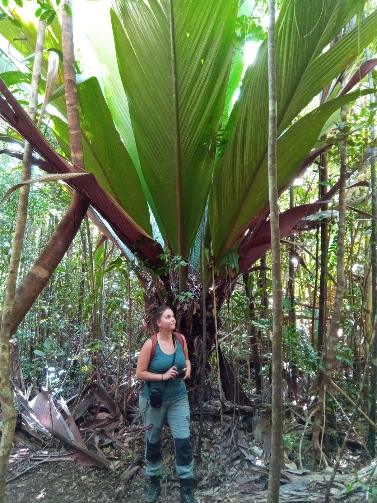
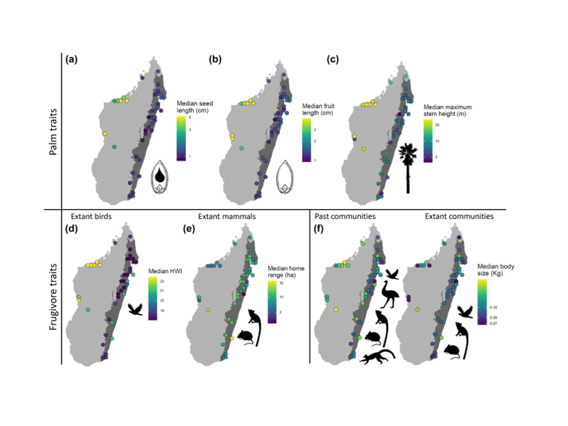
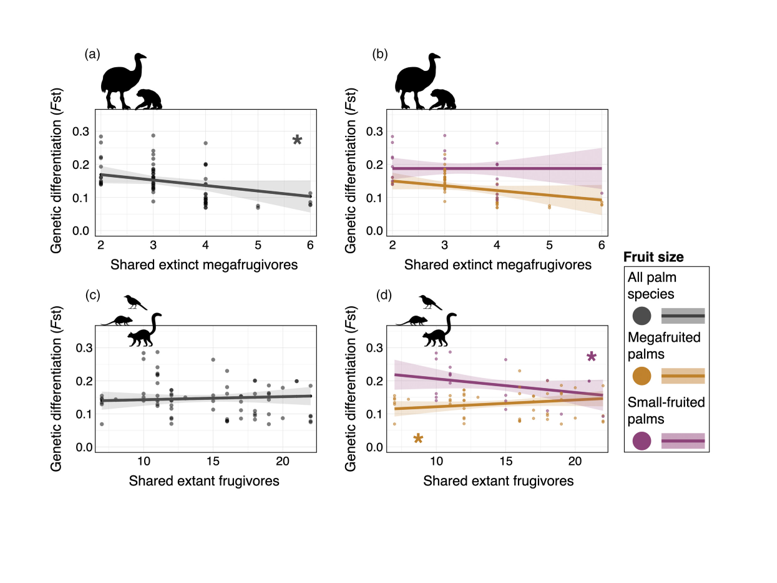
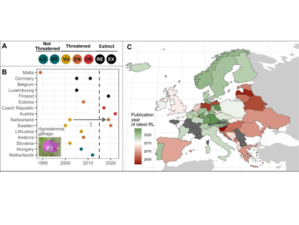
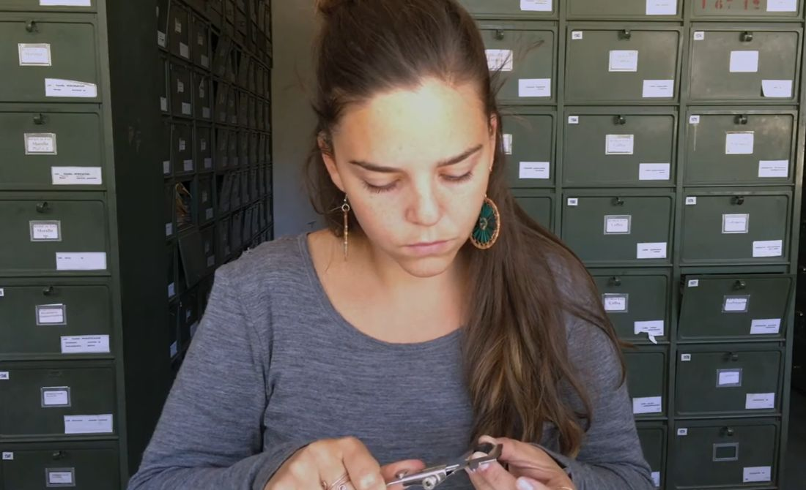
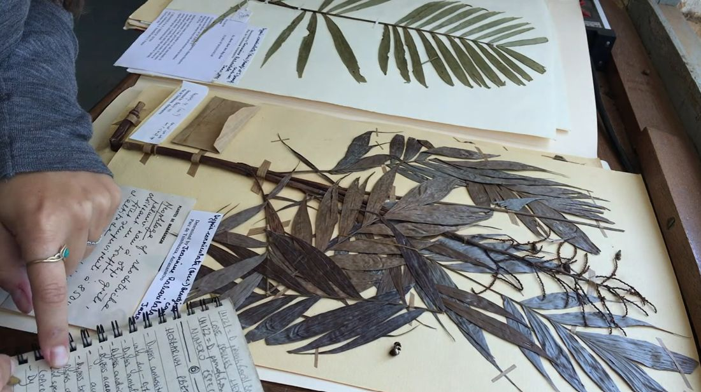

Research
My research often starts with collecting data, either in the field, from botanical collections or from existing biodiversity databases, such as GBIF. Depending on the question, I generate molecular data using approaches such as ddRADseq or metabarcoding, and combine these with information on species traits, environmental conditions and conservation assessments. I then integrate and analyse these different sources of information using bioinformatics, phylogenetic and spatial analyses, linear mixed effect models, species distribution models and other approaches. I particularly enjoy linking species interactions, functional traits, and phylogenies to assess how these affect biodiversity patterns, evolutionary changes, and extinctions in time and space.
Main research lines

Biodiversity patterns & evolution
How biotic interactions (e.g., frugivory, root-associated fungi), ecological strategies and the environment shape biodiversity.

Genetic diversity & population change
How populations change through space and time, from demographic history to contemporary decline.

Biodiversity change & conservation
Understanding biodiversity loss and improving the data and tools we use to conserve it.
Published with GitHub Pages

